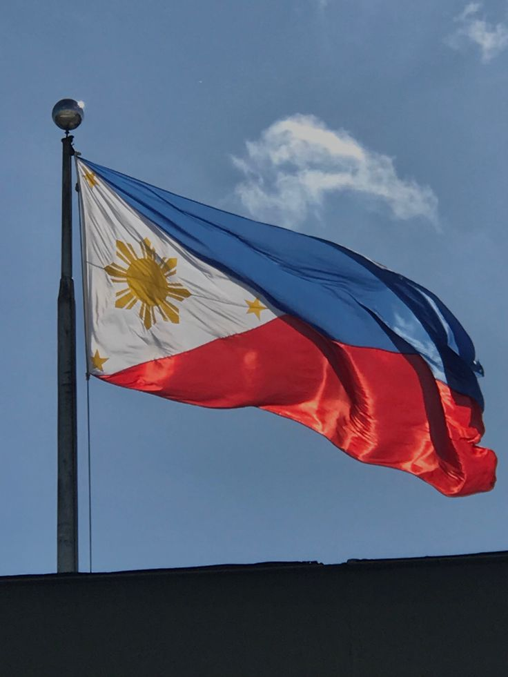

About the Philippine Travel Blog
Welcome to our travel blog dedicated to exploring the beautiful destinations of the Philippines. From the white-sand beaches of Boracay to the untouched landscapes of Palawan, we aim to provide detailed travel guides and personal experiences to help you plan your dream vacation!
